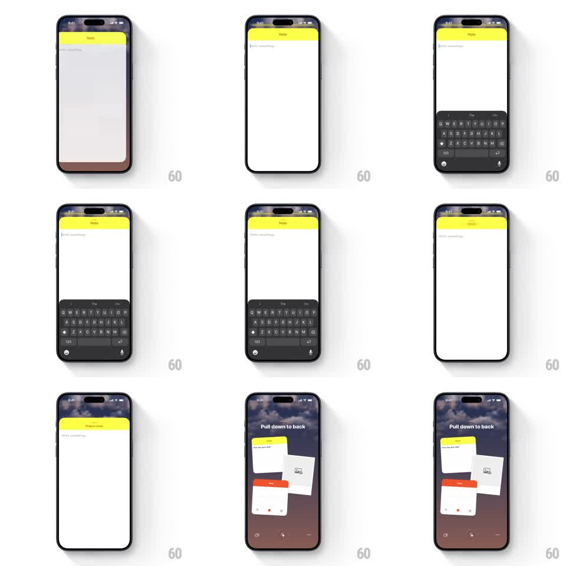

Media
Frame-by-frame

Rebuild this interaction 1:1: Ben Journal's pull-down-to-close - dragging down on a full-screen note shrinks and tilts it back into the scattered canvas, with a springy physical release.

Rebuild this interaction 1:1: Ben Journal's pull-down-to-close - dragging down on a full-screen note shrinks and tilts it back into the scattered canvas, with a springy physical release.
## Integration
Integration: stack-agnostic spec - springs given as stiffness/damping, timed motions as duration + curve; map every value to your framework and animation library of choice.
## Scene
Ben Journal: the full-screen note editor (yellow "Note" header, "Write something..." body, keyboard up) over the home canvas ("Dec 2 / Tuesday" header with the scattered widget cards on the dusk sky). Mid-gesture the note header shows "Drag to close" and the canvas behind shows a "Pull down to back" hint.
## Motion spec
Pattern: pull-down shrink-and-rotate dismiss into a spatial canvas.
- The note opens full-screen with the keyboard rising (standard 300ms).
- Pull down from the note's top area: the gesture tracks 1:1 - the note translates down, scales down toward its card size (down to ~0.45x at full drag), rotates slightly (up to 4deg, direction following horizontal finger drift), and its corner radius grows toward the card's radius - all in drag proportion.
- As the drag passes 25%, the keyboard dismisses, the note's header swaps "Note" to "Drag to close" (150ms crossfade), and the canvas fades in behind (opacity follows drag progress) with its "Pull down to back" hint fading up.
- Release past 50%: the note springs the rest of the way into its exact slot in the scattered layout (spring ~340/18, rotation settling to the card's resting tilt) - a physical landing with a soft thud haptic.
- Release before 50%: the note springs back to full-screen (same spring reversed), keyboard returning.
- During the whole gesture the canvas cards stay parked - only the note moves.
## Calibration
- Every property (scale, rotation, radius, backdrop opacity) is a function of drag distance - nothing runs on a timer while the finger is down.
- The note must land in its exact original card position and tilt - no approximations.
## Reduced motion
Pull past the threshold crossfades the note into its card slot (250ms) without tracking.
## Don't miss
- The yellow header strip stays pinned to the note's top edge through the whole shrink.
- The "Pull down to back" hint is the canvas's copy - it never appears on the note itself.